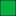

<!doctype html>
<html lang="en">
    <head>
        <meta charset="utf-8">
        <meta http-equiv="X-UA-Compatible" content="IE=edge">
        <meta name="viewport" content="initial-scale=1,user-scalable=no,maximum-scale=1,width=device-width">
        <meta name="mobile-web-app-capable" content="yes">
        <meta name="apple-mobile-web-app-capable" content="yes">
        <link rel="stylesheet" href="css/leaflet.css">
        <link rel="stylesheet" href="css/L.Control.Layers.Tree.css">
        <link rel="stylesheet" href="css/qgis2web.css">
        <link rel="stylesheet" href="css/fontawesome-all.min.css">
        <link rel="stylesheet" href="css/leaflet-measure.css">
        <style>
        html, body, #map {
            width: 100%;
            height: 100%;
            padding: 0;
            margin: 0;
        }
        </style>
       <title>Servicios Públicos</title>
       <!-- Icono -->
       <link rel="icon" href="./images/favicon1.ico">
    </head>
    <body>
        <div id="map">
        </div>
        <script src="js/qgis2web_expressions.js"></script>
        <script src="js/leaflet.js"></script>
        <script src="js/L.Control.Layers.Tree.min.js"></script>
        <script src="js/leaflet.rotatedMarker.js"></script>
        <script src="js/leaflet.pattern.js"></script>
        <script src="js/leaflet-hash.js"></script>
        <script src="js/Autolinker.min.js"></script>
        <script src="js/rbush.min.js"></script>
        <script src="js/labelgun.min.js"></script>
        <script src="js/labels.js"></script>
        <script src="js/leaflet-measure.js"></script>
        <script src="data/Desrame_1.js"></script>
        <script src="data/PinturaVial_2.js"></script>
        <script src="data/Mantenimientoplazasyespaciospublicos_3.js"></script>
        <script src="data/Asfalto_4.js"></script>
        <script src="data/ObrasCiviles_5.js"></script>
        <script>
        var map = L.map('map', {
            zoomControl:false, maxZoom:28, minZoom:1
        }).fitBounds([[-32.95133748282551,-68.89843065392243],[-32.91155069582945,-68.80598496237634]]);
        var hash = new L.Hash(map);
        map.attributionControl.setPrefix('<a href="https://github.com/tomchadwin/qgis2web" target="_blank">qgis2web</a> &middot; <a href="https://leafletjs.com" title="A JS library for interactive maps">Leaflet</a> &middot; <a href="https://qgis.org">QGIS</a>');
        var autolinker = new Autolinker({truncate: {length: 30, location: 'smart'}});
        // remove popup's row if "visible-with-data"
        function removeEmptyRowsFromPopupContent(content, feature) {
         var tempDiv = document.createElement('div');
         tempDiv.innerHTML = content;
         var rows = tempDiv.querySelectorAll('tr');
         for (var i = 0; i < rows.length; i++) {
             var td = rows[i].querySelector('td.visible-with-data');
             var key = td ? td.id : '';
             if (td && td.classList.contains('visible-with-data') && feature.properties[key] == null) {
                 rows[i].parentNode.removeChild(rows[i]);
             }
         }
         return tempDiv.innerHTML;
        }
        // add class to format popup if it contains media
		function addClassToPopupIfMedia(content, popup) {
			var tempDiv = document.createElement('div');
			tempDiv.innerHTML = content;
			if (tempDiv.querySelector('td img')) {
				popup._contentNode.classList.add('media');
					// Delay to force the redraw
					setTimeout(function() {
						popup.update();
					}, 10);
			} else {
				popup._contentNode.classList.remove('media');
			}
		}
        var zoomControl = L.control.zoom({
            position: 'topleft'
        }).addTo(map);
        var measureControl = new L.Control.Measure({
            position: 'topleft',
            primaryLengthUnit: 'meters',
            secondaryLengthUnit: 'kilometers',
            primaryAreaUnit: 'sqmeters',
            secondaryAreaUnit: 'hectares'
        });
        measureControl.addTo(map);
        document.getElementsByClassName('leaflet-control-measure-toggle')[0].innerHTML = '';
        document.getElementsByClassName('leaflet-control-measure-toggle')[0].className += ' fas fa-ruler';
        var bounds_group = new L.featureGroup([]);
        function setBounds() {
        }
        map.createPane('pane_OpenStreetMap_0');
        map.getPane('pane_OpenStreetMap_0').style.zIndex = 400;
        var layer_OpenStreetMap_0 = L.tileLayer('https://tile.openstreetmap.org/{z}/{x}/{y}.png', {
            pane: 'pane_OpenStreetMap_0',
            opacity: 1.0,
            attribution: '',
            minZoom: 1,
            maxZoom: 28,
            minNativeZoom: 0,
            maxNativeZoom: 19
        });
        layer_OpenStreetMap_0;
        map.addLayer(layer_OpenStreetMap_0);
        function pop_Desrame_1(feature, layer) {
            var popupContent = '<table>\
                    <tr>\
                        <td class="visible-with-data" id="Nombre" colspan="2"><strong>Nombre</strong><br />' + (feature.properties['Nombre'] !== null ? autolinker.link(String(feature.properties['Nombre']).replace(/'/g, '\'').toLocaleString()) : '') + '</td>\
                    </tr>\
                    <tr>\
                        <td class="visible-with-data" id="Cronograma" colspan="2"><strong>Cronograma</strong><br />' + (feature.properties['Cronograma'] !== null ? autolinker.link(String(feature.properties['Cronograma']).replace(/'/g, '\'').toLocaleString()) : '') + '</td>\
                    </tr>\
                </table>';
            var content = removeEmptyRowsFromPopupContent(popupContent, feature);
			layer.on('popupopen', function(e) {
				addClassToPopupIfMedia(content, e.popup);
			});
			layer.bindPopup(content, { maxHeight: 400 });
        }

        function style_Desrame_1_0() {
            return {
                pane: 'pane_Desrame_1',
                opacity: 1,
                color: 'rgba(35,35,35,1.0)',
                dashArray: '',
                lineCap: 'butt',
                lineJoin: 'miter',
                weight: 1.0, 
                fill: true,
                fillOpacity: 1,
                fillColor: 'rgba(4,177,63,1.0)',
                interactive: true,
            }
        }
        map.createPane('pane_Desrame_1');
        map.getPane('pane_Desrame_1').style.zIndex = 401;
        map.getPane('pane_Desrame_1').style['mix-blend-mode'] = 'normal';
        var layer_Desrame_1 = new L.geoJson(json_Desrame_1, {
            attribution: '',
            interactive: true,
            dataVar: 'json_Desrame_1',
            layerName: 'layer_Desrame_1',
            pane: 'pane_Desrame_1',
            onEachFeature: pop_Desrame_1,
            style: style_Desrame_1_0,
        });
        bounds_group.addLayer(layer_Desrame_1);
        map.addLayer(layer_Desrame_1);
        function pop_PinturaVial_2(feature, layer) {
            var popupContent = '<table>\
                    <tr>\
                        <td colspan="2"><strong>NOMBRE</strong><br />' + (feature.properties['NOMBRE'] !== null ? autolinker.link(String(feature.properties['NOMBRE']).replace(/'/g, '\'').toLocaleString()) : '') + '</td>\
                    </tr>\
                    <tr>\
                        <td class="visible-with-data" id="UBICACION" colspan="2"><strong>UBICACION</strong><br />' + (feature.properties['UBICACION'] !== null ? autolinker.link(String(feature.properties['UBICACION']).replace(/'/g, '\'').toLocaleString()) : '') + '</td>\
                    </tr>\
                    <tr>\
                        <td class="visible-with-data" id="Cronograma" colspan="2"><strong>Cronograma</strong><br />' + (feature.properties['Cronograma'] !== null ? autolinker.link(String(feature.properties['Cronograma']).replace(/'/g, '\'').toLocaleString()) : '') + '</td>\
                    </tr>\
                </table>';
            var content = removeEmptyRowsFromPopupContent(popupContent, feature);
			layer.on('popupopen', function(e) {
				addClassToPopupIfMedia(content, e.popup);
			});
			layer.bindPopup(content, { maxHeight: 400 });
        }

        function style_PinturaVial_2_0() {
            return {
                pane: 'pane_PinturaVial_2',
                opacity: 1,
                color: 'rgba(35,35,35,1.0)',
                dashArray: '',
                lineCap: 'butt',
                lineJoin: 'miter',
                weight: 1.0, 
                fill: true,
                fillOpacity: 1,
                fillColor: 'rgba(241,207,84,1.0)',
                interactive: true,
            }
        }
        map.createPane('pane_PinturaVial_2');
        map.getPane('pane_PinturaVial_2').style.zIndex = 402;
        map.getPane('pane_PinturaVial_2').style['mix-blend-mode'] = 'normal';
        var layer_PinturaVial_2 = new L.geoJson(json_PinturaVial_2, {
            attribution: '',
            interactive: true,
            dataVar: 'json_PinturaVial_2',
            layerName: 'layer_PinturaVial_2',
            pane: 'pane_PinturaVial_2',
            onEachFeature: pop_PinturaVial_2,
            style: style_PinturaVial_2_0,
        });
        bounds_group.addLayer(layer_PinturaVial_2);
        map.addLayer(layer_PinturaVial_2);
        function pop_Mantenimientoplazasyespaciospublicos_3(feature, layer) {
            var popupContent = '<table>\
                    <tr>\
                        <td class="visible-with-data" id="Nombre" colspan="2"><strong>Nombre</strong><br />' + (feature.properties['Nombre'] !== null ? autolinker.link(String(feature.properties['Nombre']).replace(/'/g, '\'').toLocaleString()) : '') + '</td>\
                    </tr>\
                    <tr>\
                        <td class="visible-with-data" id="Cronograma" colspan="2"><strong>Cronograma</strong><br />' + (feature.properties['Cronograma'] !== null ? autolinker.link(String(feature.properties['Cronograma']).replace(/'/g, '\'').toLocaleString()) : '') + '</td>\
                    </tr>\
                </table>';
            var content = removeEmptyRowsFromPopupContent(popupContent, feature);
			layer.on('popupopen', function(e) {
				addClassToPopupIfMedia(content, e.popup);
			});
			layer.bindPopup(content, { maxHeight: 400 });
        }

        function style_Mantenimientoplazasyespaciospublicos_3_0() {
            return {
                pane: 'pane_Mantenimientoplazasyespaciospublicos_3',
                opacity: 1,
                color: 'rgba(35,35,35,1.0)',
                dashArray: '',
                lineCap: 'butt',
                lineJoin: 'miter',
                weight: 1.0, 
                fill: true,
                fillOpacity: 1,
                fillColor: 'rgba(255,138,32,1.0)',
                interactive: true,
            }
        }
        map.createPane('pane_Mantenimientoplazasyespaciospublicos_3');
        map.getPane('pane_Mantenimientoplazasyespaciospublicos_3').style.zIndex = 403;
        map.getPane('pane_Mantenimientoplazasyespaciospublicos_3').style['mix-blend-mode'] = 'normal';
        var layer_Mantenimientoplazasyespaciospublicos_3 = new L.geoJson(json_Mantenimientoplazasyespaciospublicos_3, {
            attribution: '',
            interactive: true,
            dataVar: 'json_Mantenimientoplazasyespaciospublicos_3',
            layerName: 'layer_Mantenimientoplazasyespaciospublicos_3',
            pane: 'pane_Mantenimientoplazasyespaciospublicos_3',
            onEachFeature: pop_Mantenimientoplazasyespaciospublicos_3,
            style: style_Mantenimientoplazasyespaciospublicos_3_0,
        });
        bounds_group.addLayer(layer_Mantenimientoplazasyespaciospublicos_3);
        map.addLayer(layer_Mantenimientoplazasyespaciospublicos_3);
        function pop_Asfalto_4(feature, layer) {
            var popupContent = '<table>\
                    <tr>\
                        <td class="visible-with-data" id="NOMBRE" colspan="2"><strong>NOMBRE</strong><br />' + (feature.properties['NOMBRE'] !== null ? autolinker.link(String(feature.properties['NOMBRE']).replace(/'/g, '\'').toLocaleString()) : '') + '</td>\
                    </tr>\
                    <tr>\
                        <td class="visible-with-data" id="UBICACION" colspan="2"><strong>UBICACION</strong><br />' + (feature.properties['UBICACION'] !== null ? autolinker.link(String(feature.properties['UBICACION']).replace(/'/g, '\'').toLocaleString()) : '') + '</td>\
                    </tr>\
                    <tr>\
                        <td class="visible-with-data" id="Cronograma" colspan="2"><strong>Cronograma</strong><br />' + (feature.properties['Cronograma'] !== null ? autolinker.link(String(feature.properties['Cronograma']).replace(/'/g, '\'').toLocaleString()) : '') + '</td>\
                    </tr>\
                </table>';
            var content = removeEmptyRowsFromPopupContent(popupContent, feature);
			layer.on('popupopen', function(e) {
				addClassToPopupIfMedia(content, e.popup);
			});
			layer.bindPopup(content, { maxHeight: 400 });
        }

        function style_Asfalto_4_0() {
            return {
                pane: 'pane_Asfalto_4',
                opacity: 1,
                color: 'rgba(35,35,35,1.0)',
                dashArray: '',
                lineCap: 'butt',
                lineJoin: 'miter',
                weight: 1.0, 
                fill: true,
                fillOpacity: 1,
                fillColor: 'rgba(59,212,233,1.0)',
                interactive: true,
            }
        }
        map.createPane('pane_Asfalto_4');
        map.getPane('pane_Asfalto_4').style.zIndex = 404;
        map.getPane('pane_Asfalto_4').style['mix-blend-mode'] = 'normal';
        var layer_Asfalto_4 = new L.geoJson(json_Asfalto_4, {
            attribution: '',
            interactive: true,
            dataVar: 'json_Asfalto_4',
            layerName: 'layer_Asfalto_4',
            pane: 'pane_Asfalto_4',
            onEachFeature: pop_Asfalto_4,
            style: style_Asfalto_4_0,
        });
        bounds_group.addLayer(layer_Asfalto_4);
        map.addLayer(layer_Asfalto_4);
        function pop_ObrasCiviles_5(feature, layer) {
            var popupContent = '<table>\
                    <tr>\
                        <td class="visible-with-data" id="Nombre" colspan="2"><strong>Nombre</strong><br />' + (feature.properties['Nombre'] !== null ? autolinker.link(String(feature.properties['Nombre']).replace(/'/g, '\'').toLocaleString()) : '') + '</td>\
                    </tr>\
                    <tr>\
                        <td class="visible-with-data" id="Tarea" colspan="2"><strong>Tarea</strong><br />' + (feature.properties['Tarea'] !== null ? autolinker.link(String(feature.properties['Tarea']).replace(/'/g, '\'').toLocaleString()) : '') + '</td>\
                    </tr>\
                    <tr>\
                        <td class="visible-with-data" id="Cronograma" colspan="2"><strong>Cronograma</strong><br />' + (feature.properties['Cronograma'] !== null ? autolinker.link(String(feature.properties['Cronograma']).replace(/'/g, '\'').toLocaleString()) : '') + '</td>\
                    </tr>\
                </table>';
            var content = removeEmptyRowsFromPopupContent(popupContent, feature);
			layer.on('popupopen', function(e) {
				addClassToPopupIfMedia(content, e.popup);
			});
			layer.bindPopup(content, { maxHeight: 400 });
        }

        function style_ObrasCiviles_5_0() {
            return {
                pane: 'pane_ObrasCiviles_5',
                radius: 4.4,
                opacity: 1,
                color: 'rgba(0,0,0,1.0)',
                dashArray: '',
                lineCap: 'butt',
                lineJoin: 'miter',
                weight: 2.0,
                fill: true,
                fillOpacity: 1,
                fillColor: 'rgba(252,49,24,1.0)',
                interactive: true,
            }
        }
        map.createPane('pane_ObrasCiviles_5');
        map.getPane('pane_ObrasCiviles_5').style.zIndex = 405;
        map.getPane('pane_ObrasCiviles_5').style['mix-blend-mode'] = 'normal';
        var layer_ObrasCiviles_5 = new L.geoJson(json_ObrasCiviles_5, {
            attribution: '',
            interactive: true,
            dataVar: 'json_ObrasCiviles_5',
            layerName: 'layer_ObrasCiviles_5',
            pane: 'pane_ObrasCiviles_5',
            onEachFeature: pop_ObrasCiviles_5,
            pointToLayer: function (feature, latlng) {
                var context = {
                    feature: feature,
                    variables: {}
                };
                return L.circleMarker(latlng, style_ObrasCiviles_5_0(feature));
            },
        });
        bounds_group.addLayer(layer_ObrasCiviles_5);
        map.addLayer(layer_ObrasCiviles_5);
        var overlaysTree = [
            {label: ' Obras Civiles', layer: layer_ObrasCiviles_5},
            {label: ' Asfalto', layer: layer_Asfalto_4},
            {label: ' Mantenimiento plazas y espacios publicos', layer: layer_Mantenimientoplazasyespaciospublicos_3},
            {label: ' Pintura Vial', layer: layer_PinturaVial_2},
            {label: ' Desrame', layer: layer_Desrame_1},
            {label: "OpenStreetMap", layer: layer_OpenStreetMap_0, radioGroup: 'bm' },]
        var lay = L.control.layers.tree(null, overlaysTree,{
            //namedToggle: true,
            //selectorBack: false,
            //closedSymbol: '&#8862; &#x1f5c0;',
            //openedSymbol: '&#8863; &#x1f5c1;',
            //collapseAll: 'Collapse all',
            //expandAll: 'Expand all',
            collapsed: true,
        });
        lay.addTo(map);
        setBounds();
        </script>
    </body>
</html>
